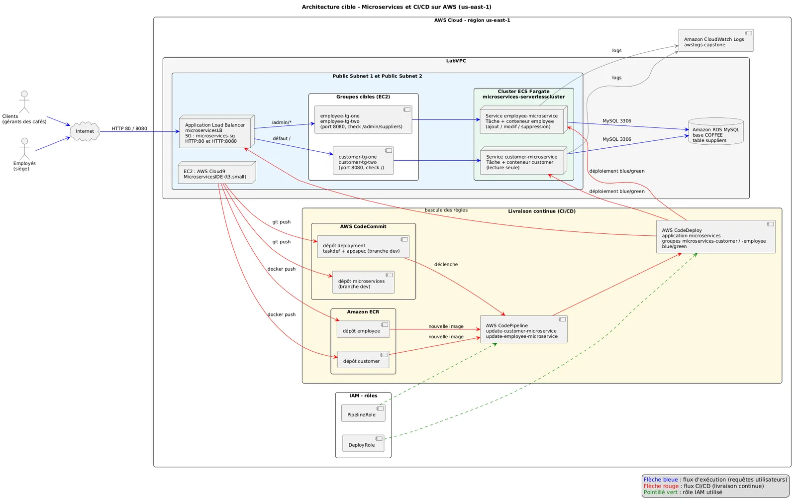
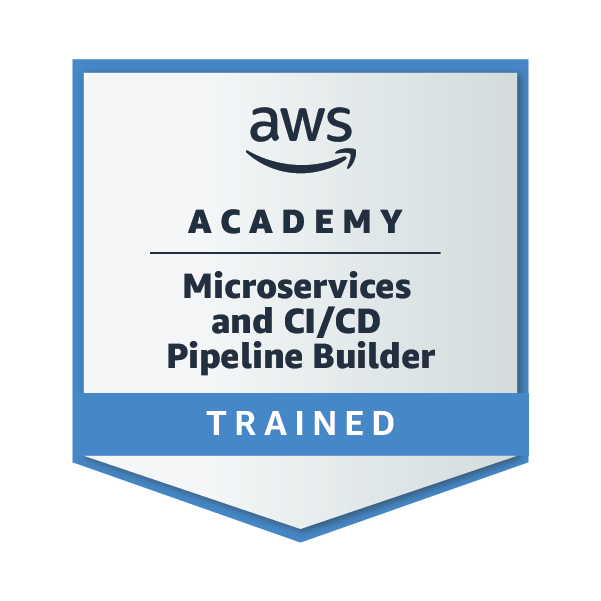
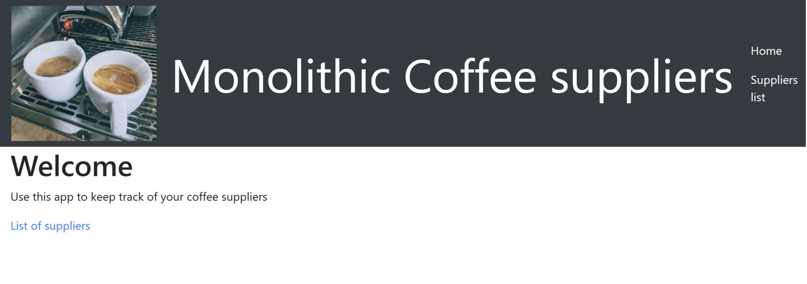
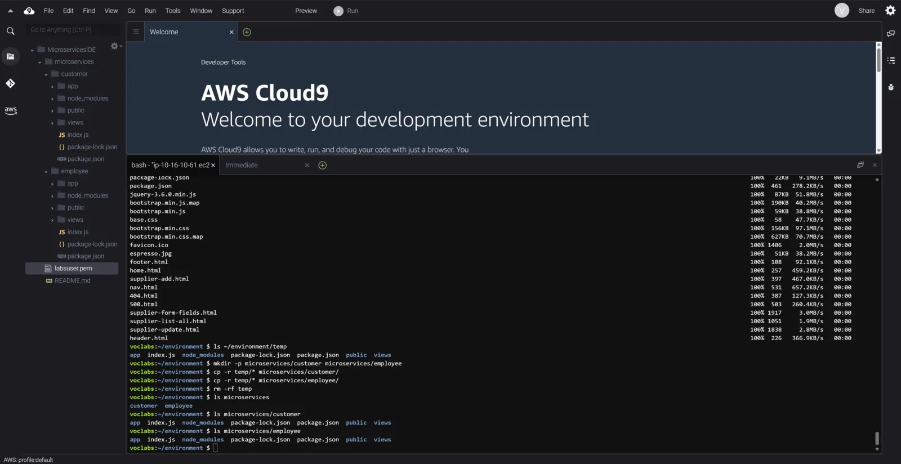
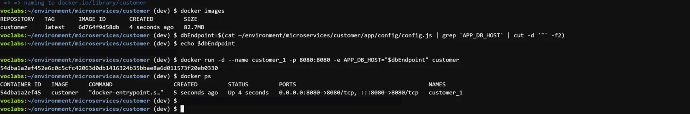
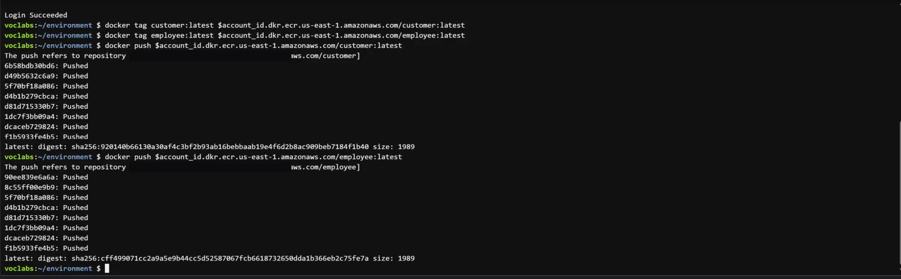
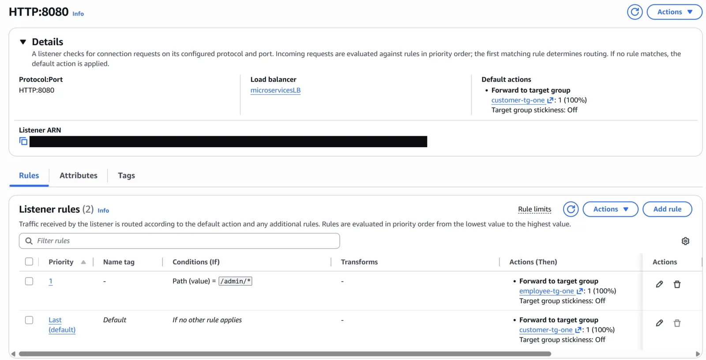
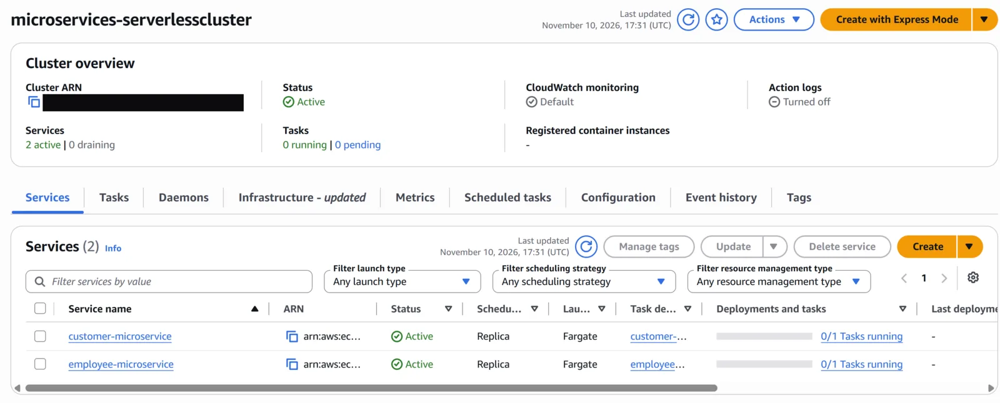
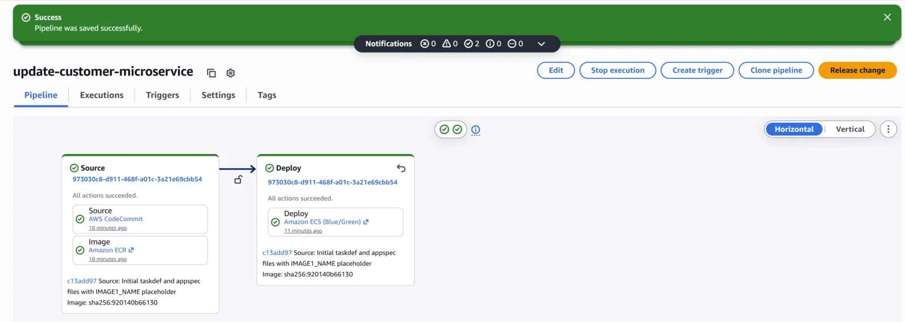
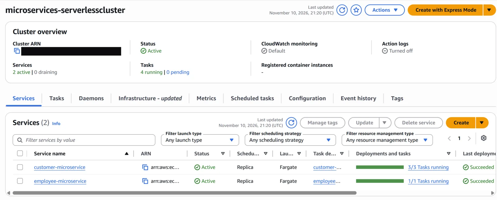

Conception et coût
Disposer d’une vue d’ensemble de la solution et de son coût mensuel avant de la construire : diagramme d’architecture et estimation avec AWS Pricing Calculator.
Exigences R1, R2
Projet AWS
Microservices & CI/CD
Du monolithe Node.js à la production sur AWS. Projet final DevOps & MLOps — Cycle ingénieur 5IIIA, HESTIM, 2026–2027.

Faire défiler
Docker — ECR — ECS Fargate — ALB — CodeDeploy — CodePipeline — Blue/Green
Le projet
Du monolithe Node.js à la production sur AWS : découper, conteneuriser, déployer et livrer en continu.
Cas d’étude : l’application de gestion des fournisseurs de café, découpée en deux microservices — customer et employee.
Environnement : AWS Academy Lab Project, Microservices and CI/CD Pipeline Builder.
Une chaîne de cafés franchisés rachète un fournisseur de café. Son application de gestion des fournisseurs est un monolithe Node.js : si elle tombe, tout le service tombe.
customer, en lecture seule, pour les gérants des cafés qui consultent les fournisseurs ; employee, sous /admin, pour les employés du siège qui les ajoutent et les modifient.
Images Docker stockées dans Amazon ECR, déployées sur un cluster Amazon ECS Fargate derrière un Application Load Balancer qui route le trafic selon le chemin.
Un pipeline CodePipeline + CodeDeploy par microservice livre chaque nouvelle version en blue/green, sans coupure.
Les 9 phases
09 / Phases

Disposer d’une vue d’ensemble de la solution et de son coût mensuel avant de la construire : diagramme d’architecture et estimation avec AWS Pricing Calculator.
Exigences R1, R2

Comprendre ce que fait le monolithe, sur quel port il écoute et à quoi il se connecte.
Exigence R3

Disposer d’un IDE dans le cloud et d’un dépôt Git contenant le code de départ des deux microservices.
Exigence R3

Obtenir deux conteneurs qui fonctionnent séparément : customer en lecture seule, employee pour l’administration.
Exigences R3, R4

Disposer des images dans un registre et des fichiers qui décrivent comment les exécuter et les déployer : définitions de tâches et fichiers AppSpec.
Exigence R3

Envoyer chaque requête vers le bon microservice selon son chemin : quatre groupes cibles et un Application Load Balancer.
Exigence R5

Faire tourner chaque microservice comme un service ECS joignable par l’ALB.
Exigence R5

Disposer de deux pipelines qui déploient automatiquement en blue/green.
Exigences R5, R6

Livrer une modification sans action manuelle sur le déploiement, sécuriser l’accès et monter en charge (service customer porté de 1 à 3 tâches).
Exigences R5, R6
En chiffres
Le rapport
Chaque partie y est documentée : les tâches réalisées, les captures qui les prouvent, les questions de compréhension et les difficultés rencontrées, jusqu’au bilan personnel.
Version publique du rapport : les identifiants de compte et adresses IP personnelles ont été masqués.